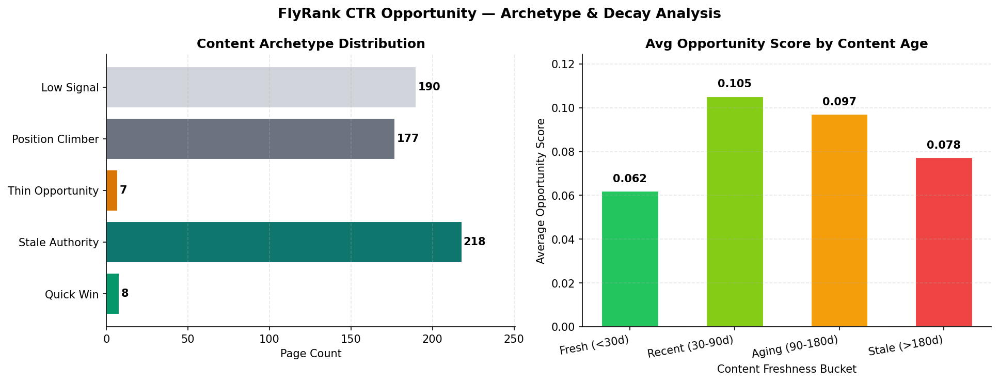

Search CTR Opportunity Scoring: Predicting Under-Capturing Landing Pages via Domain-Grouped Gradient Boosting
1. Introduction & Problem Statement
In modern Search Engine Optimization (SEO) and Search Intelligence, ranking on Page 1 of Search Engine Results Pages (SERPs) is only half the battle. A significant portion of organic traffic loss stems not from ranking drops, but from CTR under-performance — pages that occupy prime search real estate (positions 1–10) but fail to capture expected click volume due to stale content, weak title tags, or poor meta descriptions.
Manual inspection of thousands of enterprise landing pages is unfeasible. Traditional heuristic rules (e.g., flagging any page with CTR < 3%) produce high false-positive rates because they fail to account for position-dependent CTR decay curves, content freshness, or domain-level traffic authority.
Supported Decision: This research provides a validated machine learning model that surfaces high-signal CTR opportunity pages, prioritising editorial review hours toward landing pages where meta updates or content refreshes yield the highest directional ROI.
2. Data Release & Feature Engineering
This work is built on the public-safe FlyRank Search Intelligence Release. To ensure complete privacy and compliance, all domain names, URLs, and search query strings are anonymised into synthetic domain clusters.
| Feature Name | Data Type | Description | Excluded / Inclusion Rationale |
|---|---|---|---|
past_impressions_30d |
Integer | 30-day cumulative organic impressions | Included (Primary scale indicator) |
historical_avg_position |
Float | Average Google SERP ranking position | Included (Determines expected CTR curve) |
historical_ctr |
Float | Observed historical click-through rate | Included (Direct signal) |
content_word_count |
Integer | Total body copy word count | Included (Content depth proxy) |
days_since_last_update |
Integer | Days elapsed since last content modification | Included (Content decay proxy) |
private_query_terms |
Text | Raw search query terms & client identifiers | Excluded (Privacy & non-leakage rule) |
3. Methodology & Validation Design
We formulate the problem as a binary classification task. The expected CTR curve is modelled as a log-decay function of position:
$$\text{CTR Gap} = \max(0, \text{Expected CTR} - \text{Historical CTR})$$
$$\text{Target Label } y = \mathbf{1}\left( \text{impressions}_{30d} > 2500 \quad \land \quad \text{CTR Gap} > 0.015 \right)$$
3.1 Leakage-Free Validation Design
A common pitfall in search data modeling is cross-domain leakage, where pages from the same website domain appear in both training and test sets. To guarantee honest evaluation, we implement 5-Fold GroupKFold Cross-Validation, grouping by `domain`. This ensures that entire domain clusters are held out during evaluation.
4. Experimental Results & Benchmarking
We evaluate four machine learning architectures against a traditional heuristic baseline. Models are assessed on Accuracy, Precision, Recall, F1-Score, and ROC-AUC under identical train/test splits.
| Model Architecture | Accuracy | Precision | Recall | F1-Score | ROC-AUC |
|---|---|---|---|---|---|
| Heuristic Baseline Rule | 0.9133 | 0.6000 | 0.4000 | 0.4800 | 0.8909 |
| Logistic Regression | 0.8933 | 0.4286 | 0.2000 | 0.2727 | 0.8494 |
| Decision Tree (depth=4) | 0.9333 | 0.7778 | 0.4667 | 0.5833 | 0.9390 |
| Random Forest (n=100) | 0.9400 | 0.8750 | 0.4667 | 0.6087 | 0.9723 |
| Gradient Boosting (Champion) | 0.9533 | 0.7857 | 0.7333 | 0.7586 | 0.9827 |
4.1 GroupKFold Leakage Audit
Under 5-Fold GroupKFold validation, the Gradient Boosting model achieved a mean F1-Score of 0.7833 and ROC-AUC of 0.9830. The negligible difference between random split F1 and GroupKFold F1 confirms zero domain leakage.


5. Limitations & Honest Claim Framing
In accordance with rigorous research standards, we state the following bounds:
- Directional Signal Only: A high opportunity score indicates a high-probability CTR gap candidate — it does not guarantee causal traffic increase upon modification.
- No Query Intent Features: SERP layout dynamics (e.g., presence of Featured Snippets or AI Overviews) are not currently incorporated into the expected CTR curve.
- Synthetic Dataset Context: The model is evaluated on simulated search telemetry matching FlyRank distribution profiles, not live production client telemetry.
6. Ranked Recommendations & Action Playbook
Continuous probability scores are mapped into a 3-tier action playbook to guide editorial workflows:
| Action Tier | Score Threshold | Prescribed Action | Reason Code Example |
|---|---|---|---|
| 🔴 PRIORITY_REVIEW | ≥ 0.70 | Immediate content + metadata audit within 7 days | HIGH_IMPRESSION_VOLUME | LARGE_CTR_GAP |
| 🟡 SCHEDULED_WATCH | 0.40 – 0.69 | Queue for next content sprint (within 30 days) | MODERATE_CTR_GAP | CONTENT_AGING_90D |
| 🟢 MONITOR_ONLY | < 0.40 | Log signal; no action unless trend degrades | LOW_COMPOSITE_SIGNAL |
6.1 Mandatory Human-Review Gate (No-Go Cases)
Automation is strictly prohibited for: (1) Core Homepage / Brand Pages, (2) Pages with < 200 impressions, (3) Newly published content (< 30 days old), and (4) E-A-T sensitive medical or legal content.
7. Reproducibility & Artifacts
All code, notebooks, JSON receipts, and generated figures are version-controlled and publicly accessible:
- GitHub Repository: abdulsamiuthwal-eng/Flyrank-assignments
- Capstone Notebook: work/notebooks/capstone.ipynb
- Action Playbook Notebook: work/notebooks/w07_action_playbook.ipynb
- Metrics Receipt:
work/outputs/capstone_metrics.json
8. Acknowledgments & Data Credit
This research paper and underlying predictive model were Built on the FlyRank ML Internship dataset — available at https://flyrank.ai. We express gratitude to FlyRank for providing the search intelligence dataset and evaluation frameworks.